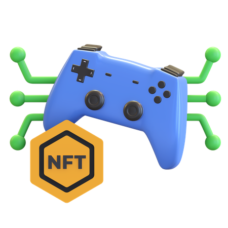
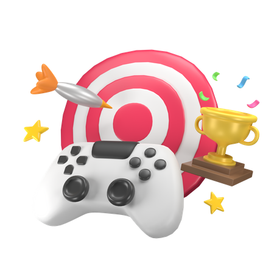
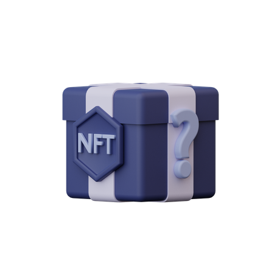
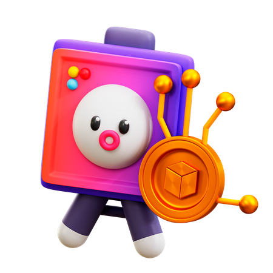

Advanced Sales for
NFT Games
Advanced sales for NFT games, also known as pre-sales or initial
game offerings, bring several benefits to both game developers and
players. Here are some of the key advantages:
For Game Developers:
Funding and Revenue Generation: Advanced sales provide game
developers with an opportunity to secure funding and generate
revenue before the official launch of the game. By offering
exclusive NFTs, in-game items, or early access to players during
the pre-sale phase, developers can generate funds to support
the game's development, marketing, and ongoing operations.
Community Building and Engagement: Pre-sales enable game
developers to build a dedicated community of early adopters
and supporters. Players who participate in the pre-sale phase
are often passionate about the game and become brand
advocates, promoting the game within their networks and
providing valuable feedback during the development process.
This engagement helps foster a strong community and increases
the game's visibility and reach.
Rarity and Exclusivity: Advanced sales allow game developers to
offer limited-edition or exclusive NFTs and in-game items to early
players. This rarity and exclusivity can attract collectors and
enthusiasts who are willing to pay a premium for unique digital
assets. The scarcity of these items enhances their value and can
create a secondary market where players can trade and sell their
acquired assets.
Player Incentives and Rewards: Pre-sales often come with
incentives and rewards for early players, such as discounted
prices, bonus items, or special privileges. These incentivesencourage players to participate in the pre-sale and provide
valuable feedback and testing during the game's development.
Rewards can also include exclusive access to beta testing, early
game features, or in-game benefits that give players a
competitive edge.
Marketing and Hype Generation: Advanced sales generate buzz
and hype around the game, creating anticipation and
excitement among players. Through strategic marketing
campaigns, developers can attract attention from the gaming
community, influencers, and media outlets. The pre-sale phase
acts as a promotional period, generating awareness and
building anticipation for the game's official launch
For Players:
Early Access and Advantage: Advanced sales give players the
opportunity to gain early access to the game, allowing them to
start playing and exploring the virtual world before the general
public. Early players can gain a competitive advantage by
acquiring rare or exclusive NFTs and in-game items that may not
be available later on. This advantage can enhance their
gameplay experience and status within the game.
Investment and Potential ROI: Participating in pre-sales can be
seen as an investment opportunity for players. Acquiring limitededition NFTs or in-game assets during the pre-sale phase can
potentially yield a return on investment if the value of these
assets increases over time. Players can also leverage their
acquired assets in the secondary market, trading or selling them
for a profit.
Community Engagement and Influence: Early players who
participate in the pre-sale phase become part of the game's
community from its early stages. They can engage with
developers, provide feedback, and shape the game's
development and direction through their involvement. This
engagement gives players a sense of ownership and influence
over the game's evolution, fostering a stronger sense of
community and satisfaction.
Exclusive Content and Rewards: Participating in advanced
sales often comes with exclusive content and rewards that are
not available to later players. These rewards can include unique
NFTs, special in-game items, or additional perks that enhance
the gameplay experience. Early players can enjoy these exclusive
benefits and stand out among later players.
Support for Game Development: By participating in the presale phase, players directly support the development of the
game they are interested in. Their contribution helps fund the
game's development and operations, allowing developers to
deliver a highquality gaming experience. Players become part of
the game's success story, knowing they played a role in bringing
the game to

Key Game Features
Web 3.0 key game features bring several benefits to players and
game developers within the decentralized and blockchain gaming
ecosystem. Here are some of the key advantages:
True Ownership of In-Game Assets: Web 3.0 games leverage
blockchain technology and non-fungible tokens (NFTs) to
provide players with true ownership of in-game assets. Unlike
traditional games, where items and assets are owned by the
game developer, Web 3.0 games enable players to own and
control their digital assets. This ownership allows players to freely
trade, sell, or transfer their assets, providing a new level of value
and investment potential.
Play-to-Earn Opportunities: Web 3.0 games introduce the
concept of playto-earn, where players can earn real-world value
through their in-game activities. By utilizing blockchain and
cryptocurrencies, players can earn rewards, in-game currency, or
valuable assets that can be monetized outside of the game. This
economic model incentivizes gameplay and provides players
with a tangible return on their time and effort.
Interoperability and Cross-Game Compatibility: Web 3.0 games
enable interoperability among different games and platforms.
Players can utilize their assets across multiple games or virtual
worlds, unlocking new experiences and interactions. This crossgame compatibility increases the value and utility of in-game
assets, allowing players to leverage their assets in various
environments and expanding the possibilities for gameplay and
social interactions.
Community Governance and Influence: Web 3.0 games often
incorporate decentralized governance mechanisms, allowing
players to have a say in the development and decision-making processes. Through voting systems or community proposals,
players can influence the game's direction, new feature
implementations, or changes in the game's ecosystem. This
participatory model empowers players and fosters a sense of
community ownership and engagement.
Enhanced Security and Fraud Prevention: Web 3.0 games
leverage blockchain's inherent security features to protect player
assets and prevent fraud. By utilizing cryptographic protocols,
smart contracts, and decentralized storage, Web 3.0 games
ensure the integrity of transactions, asset ownership, and data
privacy. This heightened security reduces the risk of hacks,
scams, and unauthorized modifications, providing players with a
more secure gaming environment.
Transparent and Trustworthy Economies: With Web 3.0 games,
in-game economies are transparent and auditable. Blockchain
technology allows for the recording and verification of all
transactions, ensuring fairness and eliminating fraudulent
activities. Players can trust that the game's economy operates
based on predefined rules and cannot be manipulated by the
game developer or other players.
Innovative Monetization Models: Web 3.0 games introduce
innovative monetization models that benefit both players and
developers. Through mechanisms like NFT sales, tokenized ingame items, and decentralized marketplaces, developers can
monetize their creations while players can benefit from increased
value and liquidity of their assets. This shift in monetization
models allows for more direct and transparent revenue-sharing
between players and developers

Game Assets
Web 3 game assets bring several benefits to players and game
developers within the decentralized and blockchain gaming
ecosystem. Here are some of the key advantages:
True Ownership: Web 3 game assets, typically represented as
non-fungible tokens (NFTs), provide players with true ownership
of their in-game items and assets. Unlike traditional games
where assets are owned and controlled by the game developer,
web 3 game assets are stored on the blockchain and can be
freely bought, sold, and transferred by players. This ownership
gives players more control over their virtual possessions and the
ability to monetize them outside of the game.
Interoperability: Web 3 game assets are designed to be
interoperable across different games and platforms. This means
that players can use their assets in multiple games or virtual
worlds, expanding the utility and value of their digital
possessions. Interoperability allows for cross-game interactions
and experiences, enabling players to leverage their assets in
various environments and enhancing the overall gaming
experience.
Play-to-Earn Opportunities: Web 3 game assets introduce the
concept of play-to-earn, where players can earn real-world
value by playing games and participating in the ecosystem.
Through in-game achievements, challenges, or competitions,
players can earn valuable assets, virtual currencies, or other
rewards that can be traded or sold for actual money. This
economic model incentivizes gameplay and provides players
with the opportunity to monetize their gaming activities.
Ownership Rights and Royalties: Web 3 game assets can
incorporate smart contracts that automate ownership rights androyalty payments to creators. This means that developers and
creators can earn a percentage of every subsequent sale or
trade of their assets on the secondary market. By ensuring
ongoing rewards for creators, web
game assets incentivize the development of high-quality and
desirable content, benefiting both creators and players.5.
Scarcity and Exclusivity: Web 3 game assets can introduce
scarcity and exclusivity to the gaming world. Each asset is unique
and limited in supply, making rare assets more valuable and
desirable. Players can own exclusive items or rare collectibles
that showcase their status and achievements within the game.
The scarcity and exclusivity of web 3 game assets enhance their
perceived value and can create a thriving secondary market for
trading and selling.
Transparency and Trust: Web 3 game assets operate on
blockchain technology, which provides transparency and trust to
players. The ownership and transaction history of assets are
recorded on the blockchain, ensuring transparency and reducing
the risk of fraud or manipulation. Players can verify the
authenticity and provenance of their assets, promoting a
trustworthy and secure gaming environment.
Player-driven Economy and Governance: Web 3 game assets
enable players to actively participate in the game's economy
and governance. Players have a say in the decisionmaking
processes, such as voting for game improvements, proposing
new features, or participating in community-driven initiatives.
This player-driven approach empowers the gaming community
and fosters a sense of ownership and engagement within the
ecosystem.
New Revenue Streams for Developers: Web 3 game assets offer
developers new revenue streams beyond traditional game sales.
Developers can generate income from the initial sale of assets,
secondary market transactions, and platform fees. This allows
developers to build sustainable businesses and continue
supporting and improving their games over time.
Overall, web 3 game assets provide benefits such as true ownership,
interoperability, play-to-earn opportunities, ownership rights for
creators, scarcity, transparency, player-driven economy, and new
revenue streams for developers. These advantages revolutionize the
gaming industry, creating more engaging and rewarding
experiences for players while empowering developers and creators
in the decentralized gaming ecosystem.

CoinsQ Public Utility Games
Public utility games are strategic interaction models that are used to
analyze and understand the dynamics of public utility systems.
These games involve multiple players who make decisions that
impact the overall utility or welfare of the public
In public utility games, players are typically responsible for
managing or allocating resources in a way that maximizes the
collective benefit for society. The objective is to find an equilibrium or
solution that optimizes the overall utility while considering the
preferences and actions of each player.
Some key features and benefits of public utility games include:
Some key features and benefits of public utility games include:
Resource Allocation: Public utility games allow players to allocate
resources efficiently and fairly. By considering the preferences
and constraints of each player, these games help in determining
the most beneficial distribution of resources for the entire
community.
Decision-Making Analysis: Public utility games provide a
framework to analyze decision-making processes in public utility
systems. They help identify the factors that influence individual
choices and their impact on the overall welfare of the society
Policy Evaluation: These games enable policymakers to evaluate
different policies or interventions before implementation. By
simulating the interactions and outcomes of various policy
options, decision-makers can assess their effectiveness and
potential impact on the public utility system.
Incentive Alignment: Public utility games help align the incentives
of individual players with the collective welfare. By designing appropriate rules and incentives, these games encourage
players to make decisions that are beneficial to both themselves
and the overall public interest.
Collaboration and Cooperation: Public utility games promote
collaboration and cooperation among players. They encourage
players to work together towards a common goal, fostering a
sense of collective responsibility and shared benefits.
Stakeholder Engagement: Public utility games provide a platform
for stakeholders to participate in the decision-making process.
By involving various stakeholders, including government entities,
industry representatives, and community members, these games
ensure a more inclusive and transparent approach to public
utility management.
Policy Iteration and Improvement: Public utility games allow
policymakers to iterate and refine policies over time. By observing
the outcomes of different strategies and adjusting the rules
accordingly, policymakers can continuously improve the
efficiency and fairness of public utility systems.
Overall, public utility games offer a valuable tool for analyzing,
understanding, and improving public utility systems. They provide
insights into decision-making dynamics, resource allocation, and
policy design, ultimately leading to more efficient, equitable, and
sustainable management of public utilities for the benefit of society
as a whole